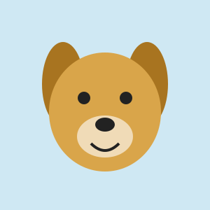
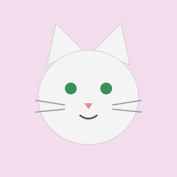
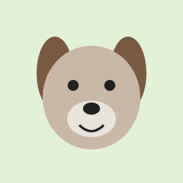

Daisy
Age: 2 years
Breed: Labrador
Friendly, playful and always ready for a walk.
Meet your new best friend
Every pet has a different personality. Take a look and see who might be the right match for your home.

Age: 2 years
Breed: Labrador
Friendly, playful and always ready for a walk.

Age: 1 year
Breed: Persian
Calm, gentle and happiest in a cozy spot.

Age: 3 years
Breed: Bulldog
A relaxed companion who loves attention.
| Name | Age | Breed | Vaccinated |
|---|---|---|---|
| Daisy | 2 | Labrador | Yes |
| Luna | 1 | Persian | Yes |
| Tony | 3 | Bulldog | Yes |